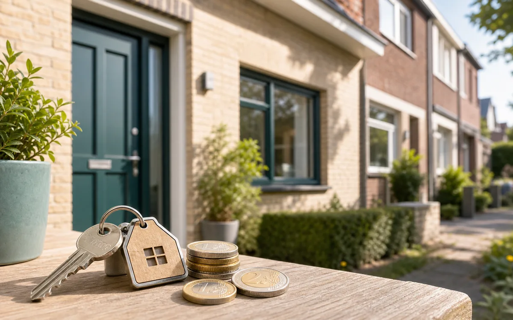
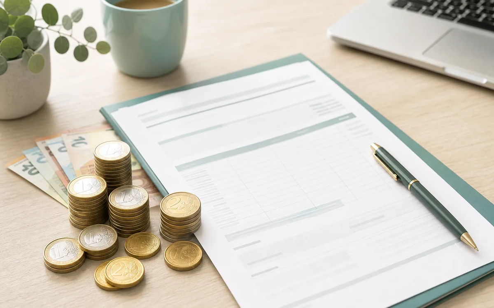
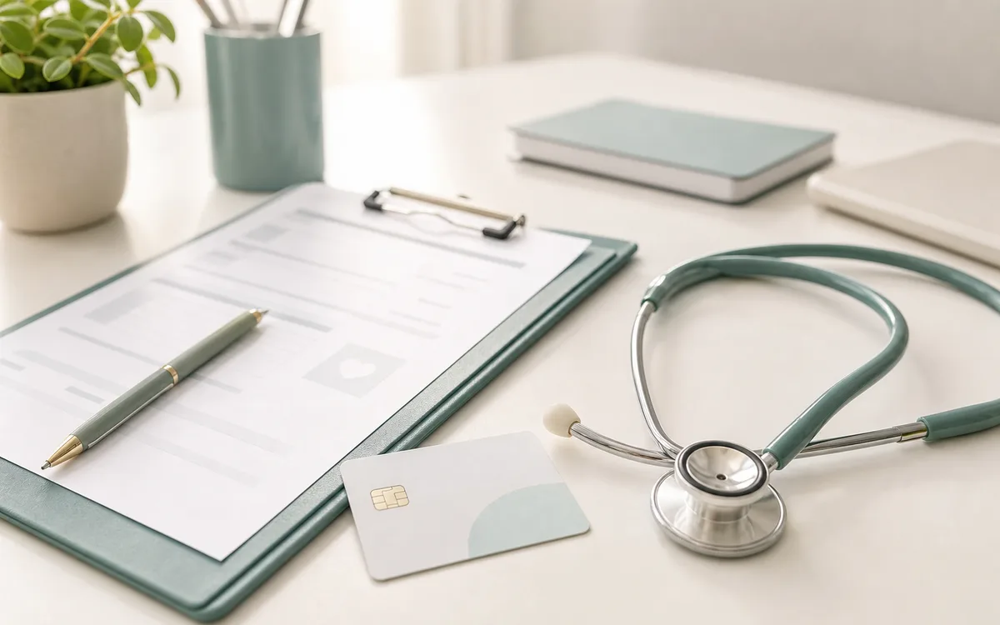
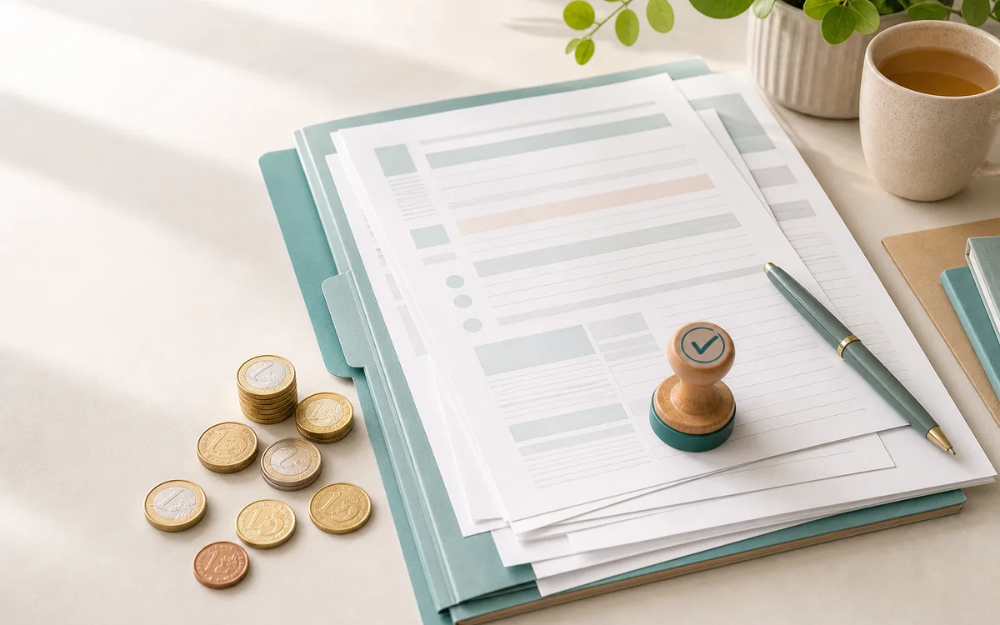
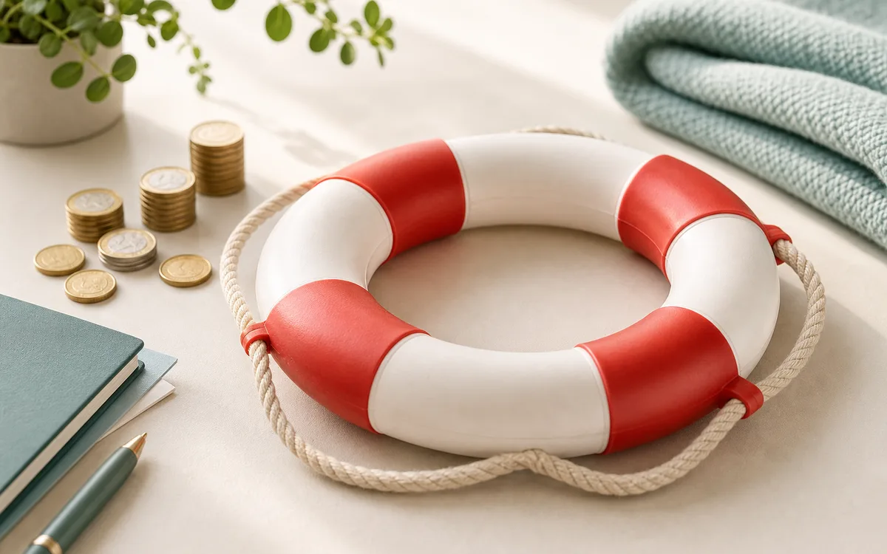

Waarop kan je besparen?
Per thema leggen we uit waar je op kan besparen, met concrete voorbeelden en de juiste officiële links. Begin gerust bij het onderwerp dat voor jou nu het zwaarst weegt.

Boodschappen
Huismerken, slimmer winkelen en minder weggooien.

Vele kleintjes
Hoe kleine dagelijkse uitgaven op een jaar oplopen.

Abonnementen & vaste kosten
Streaming, fitness, verzekeringen en goede doelen.

Energie & water
Sociaal tarief, vergelijken en verbruik verlagen.

gsm-abonnenement, internet en streaming
Goedkoper bellen, surfen en streamen.

Wonen
Huurpremie, sociale lening, huren of kopen, cohousing.

Werk & inkomen
Je loon checken, bijverdienen, meer overhouden.
Gezin & kinderen
Studeren, zakgeld, kinderbijslag en toeslagen.

Gezondheid & zorg
Terugbetalingen, verhoogde tegemoetkoming, verzekering.
Sparen & buffer
Een buffer opbouwen en sparen voor je doelen.

Schulden & oplichting
Negatieve cashflow, leningen en ongewenste betalingen.

Rechten & premies
Wat je misschien misloopt aan steun en toeslagen.

Hulp nodig?
Gratis budget- en schuldhulp en contactpunten.